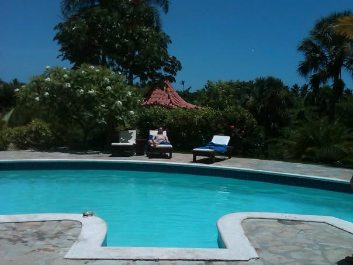

🇩🇴
Dominican Republic
Caribbean · 2005
I went with 2 good friends of mine on a trip to the Dominican Republic to enjoy a nice break in a nice villa with a pool and someone who cooked us breakfast every morning. One of my friends had never traveled outside the US except for a quick trip to Montreal once, so it was a big deal for him. We enjoyed an amazing resort with great hospitality and also got off the resort a bit to do a 4x4 tour and to see a bit more of the country outside of the tourist resorts and see the struggle and poverty many Dominican citizens face.
